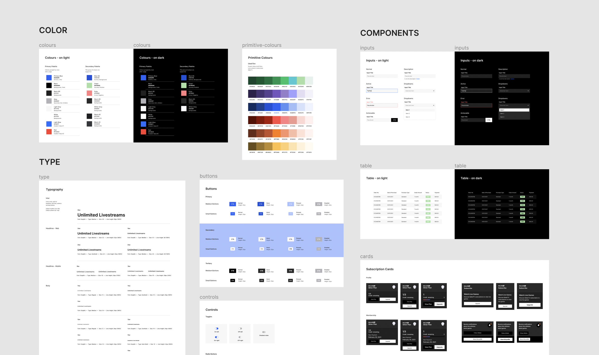

As a product designer at Friendly Studio, a freelance design agency, I co-led efforts for a complete web and mobile design overhaul of BallerTV, a youth sports streaming platform.
For this project, I worked closely with product strategists and a front-end engineer to build out user profile and events screens, as well as the main streaming interface and an NFT trading platform. I also contributed significantly to the design system, crafting both visuals and components that aligned with the rebranded identity.
A premiere youth sports streaming and recruiting platform, BallerTV had approached Friendly Studio with a singular mission: to refresh their visual identity and user experience across their web and mobile offerings. At a glance, their current design was outdated, confusing, and inefficient. To appeal to both older coaches and Gen Z athletes, the overhaul would have to balance accessibility with punchy interactions and visuals.
Before jumping into any specific UX or visual design considerations, I explored other existing products that cater to youth audiences to gain insight into current trends and patterns. By wireframing some of the core experiences, I also created a foundation to position the site's overall narrative and iterate on key navigational elements.
Although BallerTV already had a design system in place, their visual design was lackluster and unappealing to their core user groups. With my partner designer, I redefined the design system, including the components, color palette, and typography for the site. I documented our nascent design system in Figma and worked with a front-end engineer to build out the component library.

A video stream with the old design system in place (L) vs. with the new system (R)
When designing the user profile page, I had to consider the different states involved. Both athletes and coaches would be able to view an athlete's page, but with varying access to certain editing features. Furthermore, the extent of access would depend on if the user was logged in or not.
The main business goal concerning logged-out users revolved around getting them to sign up for BallerTV's platform. As a result, a lot of my work focused on drawing potential users in through visual cues, strategic CTA placements, and informational banners.
A user's profile page from a player's POV (L) vs. a logged-out coach's POV (R)
For the events page, I led the redesign of an interactive event countdown, a statistics and leaderboard display, and empty states. I built out components for the countdown mechanism and banners, as well as tables for the player and team stats. Athletes and coaches often access game-day information on the fly, which meant components had to be flexible and modular for easy transitions to mobile and last-minute updates.
Events countdown page (L) and the teams and athletes leaderboard (R)
What's more important for a sports platform than the game itself? I led the efforts for revamping the stream details page, which displays the game's video feed, as well as an interactive on-screen scoreboard with live player details. In designing this page and media feed, I had to consider how to keep all important metadata intact while minimizing the scoreboard for a seamless mobile experience.
An expanded view of the scoreboard (L) vs. a collapsed view (R)
A major part of this project was creating parallel designs for mobile and tablet views. As a result, for the pages I worked on, I designed the navigational architecture and card patterns to function cross-platform. Creating a component library was vastly important for this since I could update each master web component as needed in order to comply with mobile constraints.
Responsive views of the Highlights tab in the Events page
Working on this project was a fun and formative challenge. Some key lessons I gleaned from this experience included:
Working closely and quickly with a front-end engineer confirmed for me that creating easily changeable components was effective for both efficient collaboration and iterating on feedback. By keeping the design system up-to-date and organized, I could push designs to engineering in a short period of time with little friction.
As I iterated on the client's feedback, I had to remain flexible in my design decisions and ready to reposition designs for business needs. Sometimes flexibility meant creating alternative designs for side-by-side prototyping for comparison.
Since BallerTV's platform is accessed equally from web and mobile fronts, I had to prioritize the responsiveness of my designs. This meant that I had to reimagine certain designs that would not translate seamlessly to mobile or lose important metadata in the process.